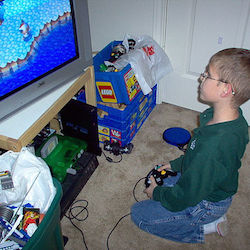

The most effective way to apply video games and video game play in
an educational setting involves understanding their effects and
processes, and the best way to understand these effects and affect our
world is through scientific study1. Through this
intellectual and practical activity, video game play research can be
systematically analyzed by observations and experimental methods, which
in turn can promote purposeful design2. Video games are
versatile in form and function. These instruments facilitate
experimental study as well as reflect scientific methodology through
their intrinsic characteristics, i.e. video game play is an intense and
engaging form of the scientific method3. As a general
example, the player asks a question, “How do I get
past this boss?” He or she does research, which can be external but
most likely internal, “This weapon weakens his shield and leaves him
vulnerable.” The player constructs a hypothesis, “If I can remove its
defenses using this weapon, I can attack the boss while it's
vulnerable.” The player tests this hypothesis, which typically involves
trail and error, “I’ll shoot this at you now. Or now. Or now. Ah!” Then
he or she analyzes the result, “Was that successful?” If successful,
the player can rinse and repeat until a new obstacle or question
arises. If unsuccessful, the player goes back through the process until
he or she is successful and can move on. This process occurs over
varying temporal and spatial scales—spanning the course of the game or
within a momentary event.
As Dignan and other researchers point out, “games are learning
engines,” and video games are intrinsically equipped to educate and
train players4. Video games naturally provide challenges
that train a number of cognitive skills, e.g. attention, memory, and
problem solving, which allow for the mastery of educational content3.
Mastery refers to the expert
performance or literacy of an individual, and it occurs through
deliberate learning and practice5.
Deliberate learning consists of three key components: setting specific
goals, obtaining immediate feedback, and concentrating as much on
technique as on outcome6. Video games
intrinsically encourage deliberate learning because they provide
players with an engaging learning environment that motivates, provides
feedback, and develops problem solving and decision-making skills. When
people have the will for something, they’re more inclined to
deliberately put effort, energy, and enthusiasm into the experience4
. Through a cyclical process, video games promote
volition—the will to do something—and faculty—the ability to do
it—which drive deliberate learning, which in turn develop student
motivation and mastery, and ultimately, provide the student with the
will and ability to continue to train4. Video
games have the potential to produce mastery over educational content,
and they can be created, modified, and integrated with instructional
strategies for specific outcomes7.
Since the
1980s, educational technology researchers have been studying the
effects of video games in an educational context. A 1982 meta-analysis
found that instructional simulation games moderately facilitated
cognitive learning8. This analysis was not specific on
whether these games were digital or not, and it recommended that more
research should be conducted and elaborated on in this field. A 1985
study investigated the role of mathematical education
games across varying learning levels7. The
investigators identified 3 types of games for learning:
pre-instructional strategy games for advanced organization,
co-instructional strategy games, which provide examples and practice of
learning in a domain, and post-instructional strategy for assessment
and synthesis. Further research has used psychological principles to
produce instructional and intelligible results for educational video
games, e.g. Piaget’s assimilation and accommodation concepts produce a
continuous cycle of cognitive disequilibrium and resolution, which can
serve as an effective teaching tool7. Other
psychological theories can help support video games as effective
learning tools: anchored instruction, feedback behaviorism,
constructivism, narrative psychology, and various cognitive principles7
. In order to grok the relationship between video
game play and education, further research using psychological theories,
e.g. cognitive behavioral therapy, and intelligible design stratagems,
e.g. digital game based learning, will need to investigate video game
features, content, and processes, e.g. breadth vs. depth, student
responsibility and engagement, endogenous (diegetic) story elements,
exogenous (nondiegetic) gameplay actions, flow, and additional video
game characteristics4,7,9.
Sources:
- Dear, P. (2006). The intelligibility of nature: How science makes sense of the world. Chicago, IL: The University of Chicago Press.
- Science (n.d.). In Oxford Dictionaries. Retrieved from http://oxforddictionaries.com/definition/english/science?q=science
- Boyan, A., & Sherry, J. (2011). The challenge in creating games for education: Aligning mental models with game models. Child Development Perspectives, 5(2), 82-87.
- Dignan, A. (2011). Game frame: Using games as a strategy for success. New York, NY: FREE PRESS.
- Ericsson, K., Krampe, R., & Tesch-Romer, C. (1993). The role of deliberate practice in the acquisition of expert performance. Psychology Review, 100(3), 363-406.
- Levitt, S., & Dubner, S. (2009). Superfreakonomics: Global cooling, patriotic prostitutes, and why suicide bombers should buy life insurance. New York, NY: HarperCollins Publishers.
- Van Eck, R. (2006). Digital game-based learning: It's not just the digital natives who are restless. Educause. Retrieved from http://net.educause.edu/ir/library/pdf/erm0620.pdf
- Szczurek, M. (1982). Meta-analysis of simulation games effectiveness for cognitive learning. (Doctoral dissertation). Retrieved from Thomas Cooper Interlibrary Loan, 1069967.
- Galloway, A. R. (2006). Gaming: Essays on algorithmic culture. Minneapolis, MN: University of Minnesota Press.
| Holistic Gaming | |
|---|---|
| Games & Play  |
Video Games
& Video Game Play  |
Educational
Games |
Learning Tools  |
| Physical & Psychological Effects of Video Game Play | |
Brain-Mind
Relationship |
The Good |
The Bad |
The Ugly
Duckling |
| A Future for Holistic Gaming | |
Research Tools |
Educational
Value |
| Prevention
& Treatment Strategies  |
A Complete
Systems Learning Game |